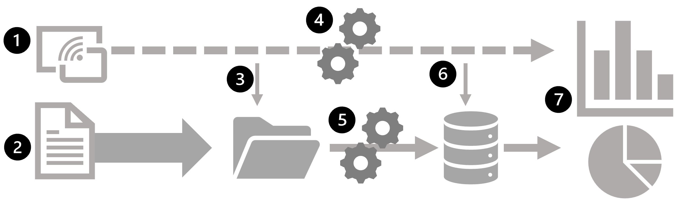
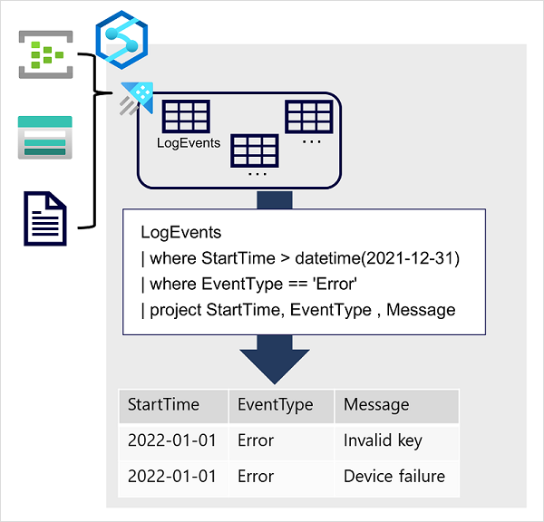

Large-scale data warehousing
Describe data warehousing architecture
Data ingestion and processing
- Data from one or more transactional data stores, files, real-time streams, or other sources is loaded into a data lake or a relational data warehouse.
- The load operation usually involves an extract, transform, and load (ETL) or extract, load, and transform (ELT) process in which the data is cleaned, filtered, and restructured for analysis.
- In ETL processes, the data is transformed before being loaded into an analytical store, while in an ELT process the data is copied to the store and then transformed.
- Either way, the resulting data structure is optimized for analytical queries.
- The data processing is often performed by distributed systems that can process high volumes of data in parallel using multi-node clusters.
- Data ingestion includes both batch processing of static data and real-time processing of streaming data.
Analytical data store
- Data stores for large scale analytics include relational data warehouses, file-system based data lakes, and hybrid architectures that combine features of data warehouses and data lakes (sometimes called data lakehouses or lake databases).
Analytical data model
while data analysts and data scientists can work with the data directly in the analytical data store, it’s common to create one or more data models that pre-aggregate the data to make it easier to produce reports, dashboards, and interactive visualizations.
Often these data models are described as cubes, in which numeric data values are aggregated across one or more dimensions (for example, to determine total sales by product and region).
The model encapsulates the relationships between data values and dimensional entities to support "drill-up/drill-down" analysis.
Analytical data model
- The data analysts consume data from analytical models, and directly from analytical stores to create reports, dashboards, and other visualizations.
- The visualizations from the data show trends, comparisons, and key performance indicators (KPIs) for a business or other organization, and can take the form of printed reports, graphs and charts in documents or PowerPoint presentations, web-based dashboards, and interactive environments in which users can explore data visually.
Explore data ingestion pipelines
how data is ingested into an analytical data store from one or more sources.

On Azure, large-scale data ingestion is best implemented by creating pipelines that orchestrate ETL processes.
You can create and run pipelines using Azure Data Factory, or you can use the same pipeline engine in Azure Synapse Analytics if you want to manage all of the components of your data warehousing solution in a unified workspace.
In either case, pipelines consist of one or more activities that operate on data.
An input dataset provides the source data, and activities can be defined as a data flow that incrementally manipulates the data until an output dataset is produced.
Pipelines use linked services to load and process data – enabling you to use the right technology for each step of the workflow.
For example, you might use an Azure Blob Store linked service to ingest the input dataset, and then use services such as Azure SQL Database to run a stored procedure that looks up related data values, before running a data processing task on Azure Databricks or Azure HDInsight, or apply custom logic using an Azure Function.
Finally, you can save the output dataset in a linked service such as Azure Synapse Analytics.
Pipelines can also include some built-in activities, which don’t require a linked service.
Explore analytical data stores
Data warehouses
A data warehouse is a relational database in which the data is stored in a schema that is optimized for data analytics rather than transactional workloads.
Commonly, the data from a transactional store is transformed into a schema in which numeric values are stored in central fact tables, which are related to one or more dimension tables that represent entities by which the data can be aggregated.
For example a fact table might contain sales order data, which can be aggregated by customer, product, store, and time dimensions (enabling you, for example, to easily find monthly total sales revenue by product for each store).
This kind of fact and dimension table schema is called a star schema; though it's often extended into a snowflake schema by adding additional tables related to the dimension tables to represent dimensional hierarchies (for example, product might be related to product categories).
A data warehouse is a great choice when you have transactional data that can be organized into a structured schema of tables, and you want to use SQL to query them.
Data lakes

A data lake is a file store, usually on a distributed file system for high performance data access.
Technologies like Spark or Hadoop are often used to process queries on the stored files and return data for reporting and analytics.
These systems often apply a schema-on-read approach to define tabular schemas on semi-structured data files at the point where the data is read for analysis, without applying constraints when it's stored.
Data lakes are great for supporting a mix of structured, semi-structured, and even unstructured data that you want to analyze without the need for schema enforcement when the data is written to the store.
Hybrid approaches
You can use a hybrid approach that combines features of data lakes and data warehouses in a lake database or data lakehouse.
The raw data is stored as files in a data lake, and a relational storage layer abstracts the underlying files and expose them as tables, which can be queried using SQL.
SQL pools in Azure Synapse Analytics include PolyBase, which enables you to define external tables based on files in a datalake (and other sources) and query them using SQL.
Synapse Analytics also supports a Lake Database approach in which you can use database templates to define the relational schema of your data warehouse, while storing the underlying data in data lake storage – separating the storage and compute for your data warehousing solution.
Data lakehouses are a relatively new approach in Spark-based systems, and are enabled through technologies like Delta Lake; which adds relational storage capabilities to Spark, so you can define tables that enforce schemas and transactional consistency, support batch-loaded and streaming data sources, and provide a SQL API for querying.
Azure services for analytical stores
- Azure Synapse Analytics
Unified, end-to-end solution for large scale data analytics.
It brings together multiple technologies and capabilities, enabling you to combine the data integrity and reliability of a scalable, high-performance SQL Server based relational data warehouse with the flexibility of a data lake and open-source Apache Spark
It also includes native support for log and telemetry analytics with Azure Synapse Data Explorer pools, as well as built in data pipelines for data ingestion and transformation.
All Azure Synapse Analytics services can be managed through a single, interactive user interface called Azure Synapse Studio, which includes the ability to create interactive notebooks in which Spark code and markdown content can be combined.

- Azure Databricks
Azure implementation of the popular Databricks platform.
Databricks is a comprehensive data analytics solution built on Apache Spark, and offers native SQL capabilities as well as workload-optimized Spark clusters for data analytics and data science.
Databricks provides an interactive user interface through which the system can be managed and data can be explored in interactive notebooks.
Due to its common use on multiple cloud platforms, you might want to consider using Azure Databricks as your analytical store if you want to use existing expertise with the platform or if you need to operate in a multi-cloud environment or support a cloud-portable solution
- Azure HDInsight
Azure service that supports multiple open-source data analytics cluster types. Although not as user-friendly as Azure Synapse Analytics and Azure Databricks, it can be a suitable option if your analytics solution relies on multiple open-source frameworks or if you need to migrate an existing on-premises Hadoop-based solution to the cloud.
- Each of these services can be thought of as an analytical data store, in the sense that they provide a schema and interface through which the data can be queried.
- In many cases however, the data is actually stored in a data lake and the service is used to process the data and run queries.
- Some solutions might even combine the use of these services. An extract, load, and transform (ELT) ingestion process might copy data into the data lake, and then use one of these services to transform the data, and another to query it.
-
For example, a pipeline might use a MapReduce job running in HDInsight or a notebook running in Azure Databricks to process a large volume of data in the data lake, and then load it into tables in a SQL pool in Azure Synapse Analytics.
-
Which Azure services can you use to create a pipeline for data ingestion and processing?
- Azure Synapse Analytics and Azure Data Factory
That's correct. Both Azure Synapse Analytics and Azure Data Factory include the capability to create pipelines.
- What must you define to implement a pipeline that reads data from Azure Blob Storage?
- A linked service for your Azure Blob Storage account
You need to create linked services for external services you want to use in the pipeline.
- Which open-source distributed processing engine does Azure Synapse Analytics include?
- Apache Spark
Azure Synapse Analytics includes an Apache Spark runtime.
- Apache Spark
real-time analytics
Understand batch and stream processing
There are two general ways to process data:
- Batch processing, in which multiple data records are collected and stored before being processed together in a single operation.
- Stream processing, in which a source of data is constantly monitored and processed in real time as new data events occur.
Understand batch processing
In batch processing, newly arriving data elements are collected and stored, and the whole group is processed together as a batch.
Exactly when each group is processed can be determined in a number of ways. For example, you can process data based on a scheduled time interval (for example, every hour), or it could be triggered when a certain amount of data has arrived, or as the result of some other event.
Advantages of batch processing include:
- Large volumes of data can be processed at a convenient time.
- It can be scheduled to run at a time when computers or systems might otherwise be idle, such as overnight, or during off-peak hours.
Disadvantages of batch processing include:
- The time delay between ingesting the data and getting the results.
- All of a batch job's input data must be ready before a batch can be processed.
- This means data must be carefully checked. Problems with data, errors, and program crashes that occur during batch jobs bring the whole process to a halt.
- The input data must be carefully checked before the job can be run again. Even minor data errors can prevent a batch job from running.
Understand stream processing
In stream processing, each new piece of data is processed when it arrives.
Unlike batch processing, there's no waiting until the next batch processing interval - data is processed as individual units in real-time rather than being processed a batch at a time.
Stream data processing is beneficial in scenarios where new, dynamic data is generated on a continual basis.
Real world examples of streaming data include:
- A financial institution tracks changes in the stock market in real time, computes value-at-risk, and automatically rebalances portfolios based on stock price movements.
- An online gaming company collects real-time data about player-game interactions, and feeds the data into its gaming platform. It then analyzes the data in real time, offers incentives and dynamic experiences to engage its players.
- A real-estate website that tracks a subset of data from mobile devices, and makes real-time property recommendations of properties to visit based on their geo-location.
Stream processing is ideal for time-critical operations that require an instant real-time response. For example, a system that monitors a building for smoke and heat needs to trigger alarms and unlock doors to allow residents to escape immediately in the event of a fire.
Understand differences between batch and streaming data
Apart from the way in which batch processing and streaming processing handle data, there are other differences:
-
Data scope: Batch processing can process all the data in the dataset.
- Stream processing typically only has access to the most recent data received, or within a rolling time window (the last 30 seconds, for example).
-
Data size: Batch processing is suitable for handling large datasets efficiently.
- Stream processing is intended for individual records or micro batches consisting of few records.
-
Performance: Latency is the time taken for the data to be received and processed.
- The latency for batch processing is typically a few hours.
- Stream processing typically occurs immediately, with latency in the order of seconds or milliseconds.
-
Analysis: You typically use batch processing to perform complex analytics.
- Stream processing is used for simple response functions, aggregates, or calculations such as rolling averages.
Combine batch and stream processing
Many large-scale analytics solutions include a mix of batch and stream processing, enabling both historical and real-time data analysis.
It's common for stream processing solutions to capture real-time data, process it by filtering or aggregating it, and present it through real-time dashboards and visualizations.
while also persisting the processed results in a data store for historical analysis alongside batch processed data .
Even when real-time analysis or visualization of data is not required, streaming technologies are often used to capture real-time data and store it in a data store for subsequent batch processing.

- Data events from a streaming data source are captured in real-time.
- Data from other sources is ingested into a data store (often a data lake) for batch processing.
- If real-time analytics is not required, the captured streaming data is written to the data store for subsequent batch processing.
- When real-time analytics is required, a stream processing technology is used to prepare the streaming data for real-time analysis or visualization; often by filtering or aggregating the data over temporal windows.
- The non-streaming data is periodically batch processed to prepare it for analysis, and the results are persisted in an analytical data store (often referred to as a data warehouse) for historical analysis.
- The results of stream processing may also be persisted in the analytical data store to support historical analysis.
- Analytical and visualization tools are used to present and explore the real-time and historical data.
Commonly used solution architectures for combined batch and stream data processing include lambda and delta architectures
Explore common elements of stream processing architecture
A general architecture for stream processing

- An event generates some data.
- This might be a signal being emitted by a sensor,
- a social media message being posted
- a log file entry being written,
- any other occurrence that results in some digital data.
- The generated data is captured in a streaming source for processing.
- In simple cases, the source may be a folder in a cloud data store or a table in a database.
- In more robust streaming solutions, the source may be a "queue" that encapsulates logic to ensure that event data is processed in order and that each event is processed only once.
- The event data is processed, often by a perpetual query that operates on the event data to select data for specific types of events, project data values, or aggregate data values over temporal (time-based) periods (or windows) - for example, by counting the number of sensor emissions per minute.
- The results of the stream processing operation are written to an output (or sink), which may be a file, a database table, a real-time visual dashboard, or another queue for further processing by a subsequent downstream query.
Real-time analytics in Azure
- Azure Stream Analytics: A platform-as-a-service (PaaS) solution that you can use to define streaming jobs that ingest data from a streaming source, apply a perpetual query, and write the results to an output.
- Spark Structured Streaming: An open-source library that enables you to develop complex streaming solutions on Apache Spark based services, including Azure Synapse Analytics, Azure Databricks, and Azure HDInsight.
- Azure Data Explorer: A high-performance database and analytics service that is optimized for ingesting and querying batch or streaming data with a time-series element, and which can be used as a standalone Azure service or as an Azure Synapse Data Explorer runtime in an Azure Synapse Analytics workspace.
Sources for stream processing
ingest data for stream processing on Azure:
- Azure Event Hubs: A data ingestion service that you can use to manage queues of event data, ensuring that each event is processed in order, exactly once.
- Azure IoT Hub: A data ingestion service that is similar to Azure Event Hubs, but which is optimized for managing event data from Internet-of-things (IoT) devices.
- Azure Data Lake Store Gen 2: A highly scalable storage service that is often used in batch processing scenarios, but which can also be used as a source of streaming data.
- Apache Kafka: An open-source data ingestion solution that is commonly used together with Apache Spark. You can use Azure HDInsight to create a Kafka cluster.
Sinks for stream processing
- Azure Event Hubs: Used to queue the processed data for further downstream processing.
- Azure Data Lake Store Gen 2 or Azure blob storage: Used to persist the processed results as a file.
- Azure SQL Database or Azure Synapse Analytics, or Azure Databricks: Used to persist the processed results in a database table for querying and analysis.
- Microsoft Power BI: Used to generate real time data visualizations in reports and dashboards.
Azure Stream Analytics
Azure Stream Analytics is a service for complex event processing and analysis of streaming data. Stream Analytics is used to:
- Ingest data from an input, such as an Azure event hub, Azure IoT Hub, or Azure Storage blob container.
- Process the data by using a query to select, project, and aggregate data values.
- Write the results to an output, such as Azure Data Lake Gen 2, Azure SQL Database, Azure Synapse Analytics, Azure Functions, Azure event hub, Microsoft Power BI, or others.

Once started, a Stream Analytics query will run perpetually, processing new data as it arrives in the input and storing results in the output.
Azure Stream Analytics is a great technology choice when you need to continually capture data from a streaming source, filter or aggregate it, and send the results to a data store or downstream process for analysis and reporting.
Azure Stream Analytics jobs and clusters
The easiest way to use Azure Stream Analytics is to create a Stream Analytics job in an Azure subscription, configure its input(s) and output(s), and define the query that the job will use to process the data.
If your stream process requirements are complex or resource-intensive, you can create a Stream Analysis cluster, which uses the same underlying processing engine as a Stream Analytics job, but in a dedicated tenant (so your processing is not affected by other customers) and with configurable scalability that enables you to define the right balance of throughput and cost for your specific scenario.
Apache Spark on Microsoft Azure
Apache Spark is a distributed processing framework for large scale data analytics. You can use Spark on Microsoft Azure in the following services:
- Azure Synapse Analytics
- Azure Databricks
- Azure HDInsight
Spark can be used to run code (usually written in Python, Scala, or Java) in parallel across multiple cluster nodes, enabling it to process very large volumes of data efficiently.
Spark can be used for both batch processing and stream processing.
- Spark Structured Streaming
To process streaming data on Spark, you can use the Spark Structured Streaming library, which provides an application programming interface (API) for ingesting, processing, and outputting results from perpetual streams of data.
Spark Structured Streaming is built on a ubiquitous structure in Spark called a dataframe, which encapsulates a table of data.
You use the Spark Structured Streaming API to read data from a real-time data source, such as a Kafka hub, a file store, or a network port, into a "boundless" dataframe that is continually populated with new data from the stream.
You then define a query on the dataframe that selects, projects, or aggregates the data - often in temporal windows.
The results of the query generate another dataframe, which can be persisted for analysis or further processing.
Spark Structured Streaming is a great choice for real-time analytics when you need to incorporate streaming data into a Spark based data lake or analytical data store.
- Delta Lake
Delta Lake is an open-source storage layer that adds support for transactional consistency, schema enforcement, and other common data warehousing features to data lake storage.
It also unifies storage for streaming and batch data, and can be used in Spark to define relational tables for both batch and stream processing.
When used for stream processing, a Delta Lake table can be used as a streaming source for queries against real-time data, or as a sink to which a stream of data is written.
The Spark runtimes in Azure Synapse Analytics and Azure Databricks include support for Delta Lake.
Delta Lake combined with Spark Structured Streaming is a good solution when you need to abstract batch and stream processed data in a data lake behind a relational schema for SQL-based querying and analysis.
Azure Data Explorer
Azure Data Explorer is a standalone Azure service for efficiently analyzing data.
You can use the service as the output for analyzing large volumes of diverse data from data sources such as websites, applications, IoT devices, and more.
For example, by outputting Azure Stream Analytics logs to Azure Data Explorer, you can complement Stream Analytics low latency alerts handling with Data Explorer's deep investigation capabilities.
The service is also encapsulated as a runtime in Azure Synapse Analytics, where it is referred to as Azure Synapse Data Explorer;
enabling you to build and manage analytical solutions that combine SQL, Spark, and Data Explorer analytics in a single workspace.

Data is ingested into Data Explorer through one or more connectors or by writing a minimal amount of code.
This enables you to quickly ingest data from a wide variety of data sources, including both static and streaming sources.
Data Explorer supports batching and streaming in near real time to optimize data ingestion.
The ingested data is stored in tables in a Data Explorer database, where automatic indexing enables high-performance queries.
Azure Data Explorer is a great choice of technology when you need to:
- Capture and analyze real-time or batch data that includes a time-series element;
- Such as log telemetry or values emitted by Internet-of-things (IoT) devices.
- Explore, filter, and aggregate data quickly by using the intuitive and powerful Kusto Query Language (KQL).
Azure Synapse Data Explorer is an especially good choice when you need to perform these tasks in a centralized environment used for other kinds of analytics, such as SQL and Spark based queries.
- Kusto Query Language (KQL)
To query Data Explorer tables, you can use Kusto Query Language (KQL), a language that is specifically optimized for fast read performance – particularly with telemetry data that includes a timestamp attribute.
The most basic KQL query consists simply of a table name, in which case the query returns all of the data in the table.
For example, the following query would return the contents of the LogEvents table:
LogEvents
You can add clauses to a Kusto query to filter, sort, aggregate, and return (project) specific columns. Each clause is prefixed by a | character.
For example, the following query returns the StartTime, EventType, and Message columns from the LogEvents table for errors that were recorded after December 31st 2021.
LogEvents
| where StartTime > datetime(2021-12-31)
| where EventType == 'Error'
| project StartTime, EventType , Message
Kusto query language is a versatile but intuitive language that enables data analysts to quickly gain insights from data captured and stored in a Data Explorer database.
1.Which definition of stream processing is correct?
- Data is processed continually as new data records arrives
Stream processing is used to continually process new data as it arrives.
Collecting and processing data periodically as a batch is referred to as batch processing.
2.Which service would you use to continually capture data from an IoT Hub, aggregate it over temporal periods, and store results in Azure SQL Database?
- Azure Stream Analytics
Azure Stream Analytics can be used to query a stream of data from Azure IoT Hub and store the results in Azure SQL Database.
3.Which language would you use to query real-time log data in Azure Synapse Data Explorer?
- KQL
Kusto Query Language is an intuitive but powerful language for querying Data Explorer tables.